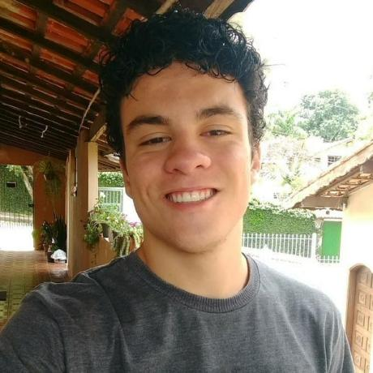
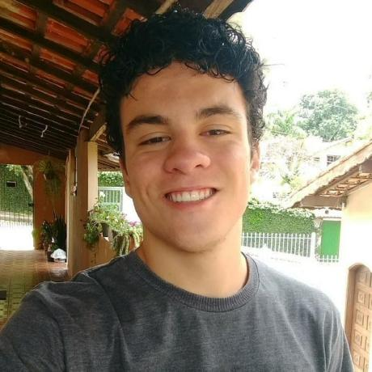

Somos a Console Tech Consulting (CTC), uma empresa formada por alunos cursantes de Análise e Desenvolvimento de Sistemas (ADS) da São Paulo Tech School.
Um projeto que visa ajudar você que é passageiro dos trens e metrôs do estado de São Paulo e também você que é da área de suporte de máquinas de carregamento de cartões de transporte metroviários!
Nosso projeto tem como foco monitorar os totens de recarregamento de cartões, com o objetivo de evitar e mitigar lentidão na hora do passageiro recarregar o seu cartão de transporte, fazendo com que assim evitemos aglomerações desnecessárias nas estações, além de fazer com que a manutenção dos equipamentos fique bem mais simples e precisa, já que o problema será apontado nos gráficos de monitoramentos.
Mas a pergunta é como faremos isso? Acreditamos que o grande motivo que acarreta esses problemas são a falta de monitoramento nos totens, fazendo com que os técnicos tenham dificuldades para arrumar os aparelhos, além de não saberem de maneira rápida e precisa quais as máquinas que estão com problemas. Até alguma pessoa reportar o problema, e até essa reclamação chegar no suporte, demora muito, fazendo com que os problemas só aumentem e se intensifiquem.
Nosso projeto visa ajudar com esse monitoramento, mostrando de formas gráficas e analíticas todas as informações sobre o totem, fazendo com que a manutenção fique mais simples, pois o técnico saberá qual componente está com problema, também será enviado em forma de relatório alguns passos para ele saber como provavelmente poderá resolver o incidente e além de tudo isso ele poderá ser avisado de maneira mais precisa e rápida solucionando os problemas em uma velocidade muito maior.
Alejandro Quispe
Gabriel Inácio
Lucas Hessel
 

Victor Hayafuji
Yuri Leal
Contatos:
E-mail:
consoletechconsulting@gmail.com
Celular:
+55 (11) 962741491